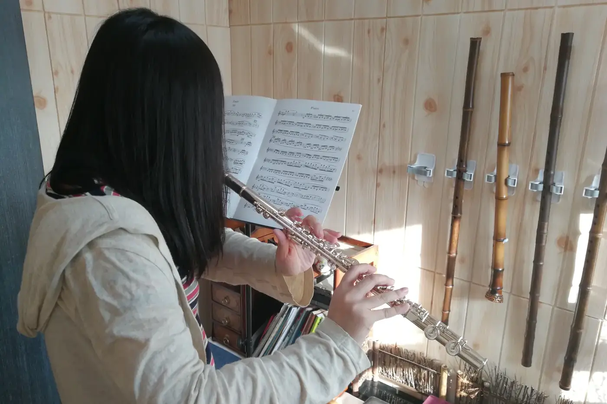

長笛每日練習，可以先把首五分鐘留給聲音，再用十五分鐘左右分配長音、相鄰音和一小句旋律，中間留休息。這些數字只是可調整的例子，當日狀態才是準繩。

笛盒打開，樂譜也放好了，手卻習慣直奔最難的一行。很多學生只練曲，少了每天校準聲音這一步。
打開笛盒後的首五分鐘
環境和管身的溫度、嘴唇的感覺，都可能與昨天不同。第一下聲音不理想，未必表示技巧倒退。急着用更大的力氣補救，反而會把肩膊和嘴角一起收緊。
這段時間不必追求音域寬廣。站穩，把譜架調到不用低頭的位置，用自然呼吸吹一個舒適的音，平平地開始，平平地結束。
聽音頭有沒有很多氣聲，尾音有沒有突然塌下來。今天只選其中一項處理，不必同時修正三件事。
接着吹相鄰的兩個音，音量相若。第二個音總是較用力，就停下來默按一次指法，再接回氣流。這個小比較，比連吹一串音階更容易聽見問題。
五分鐘可以這樣分：
- 兩分鐘單音，聽音頭和收音
- 一分鐘連音，比較兩音的質感
- 兩分鐘短句，把音色帶回旋律
十五分鐘長音怎樣分？
十五分鐘是一個例子，不是要一口氣吹足的配額。時間可以分給短長音、相鄰音轉換和一小句旋律，中間留休息。
先花數分鐘聽中音的音頭，再在相鄰音之間保持同樣質感，然後抽出曲中一句作比較。
每次只比較一個聲音分別：音頭、音中或收音。耳朵有了清楚的標準，才加入低中高三區、漸強漸弱和音準檢查。音域和力度一次增加一種，避免整段都在測試極限。
一天精神較弱，就縮短安排，仍然保留一個清楚的聆聽任務。
練完寫一句具體的觀察，例如「中音收尾能保持到第四拍，高音仍容易變尖」。有了前後可比較的記錄，長音才不會變成每天照做、卻不知道聽甚麼的儀式。
嘴唇累了，還要繼續嗎？
同一段已吹了很多遍，聲音卻比開始時更薄。這時再加次數，未必換得到更好的結果。
不要用今天吹了多久作唯一尺度。嘴角不自覺夾緊、手指開始用力、肩膊一直抬高，就先停一停，重新整理姿勢。出現疼痛或持續不適便停止，讓合適的專業人士協助判斷。
休息不等於離開音樂。放下長笛後，可以默讀下一句，找出容易漏看的升降記號，也可以輕拍節奏，或聽剛才十幾秒的錄音。
難點吹兩三次便檢查一次。每次都在相同位置出錯，換方法可能比繼續重複有效，例如先只按指法，或把兩拍拆成一拍，讓任務回到控制得住的範圍。
每段練習結束，記下「做過甚麼」以外的東西：哪個速度可以保持放鬆？哪個音一加快便不清楚？下一次從哪裏開始？
休息也不必變成嚴格考核。有人適合較短較密的段落，有人能維持稍長的時間，仍要看當日狀態。
怎樣把熱身帶進樂曲？
長音裏找到的聲音，離開長音練習便消失，練了也用不上。
從今日要練的作品裏找一句音域相近的旋律，只吹前半句，試試剛才的音色留不留得住。旋律一出現就開始趕，先唱一次，再拿起長笛。
嘴唇疲倦便縮短。結束時寫下一句，例如「今天第二個音容易變薄」，下次練習就有明確的起點。
常見問題
長音一定要練足十五分鐘嗎？
不用。十五分鐘只是分配時間的例子，中間要休息，狀態差時可以縮短，保留一個聆聽任務就好。
熱身可以直接吹音階嗎？
可以吹，但先用單音和相鄰兩音較易聽見問題。音階的音太多，耳朵不容易停在一件事上。
只有十分鐘，先練甚麼？
先吹幾個容易的音聽聲音，再處理一處小難點。更多短時間的安排，可以讀練習時間怎樣安排。
今天打開笛盒，先別翻到最難那一行，吹一個容易的音，只聽它的音頭。需要計時或固定拍子，可以用長音練習和節拍器。